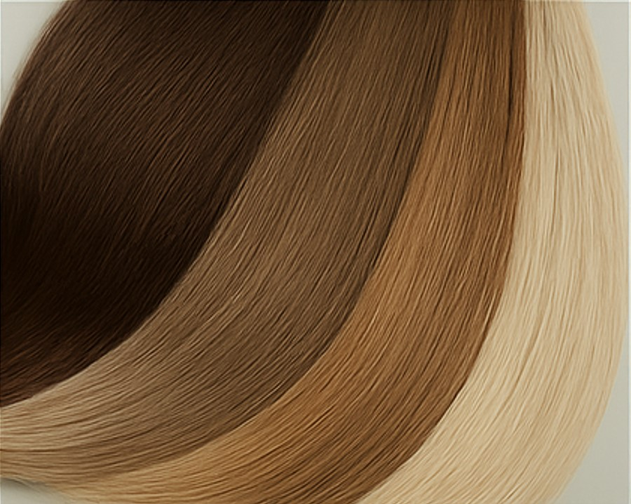
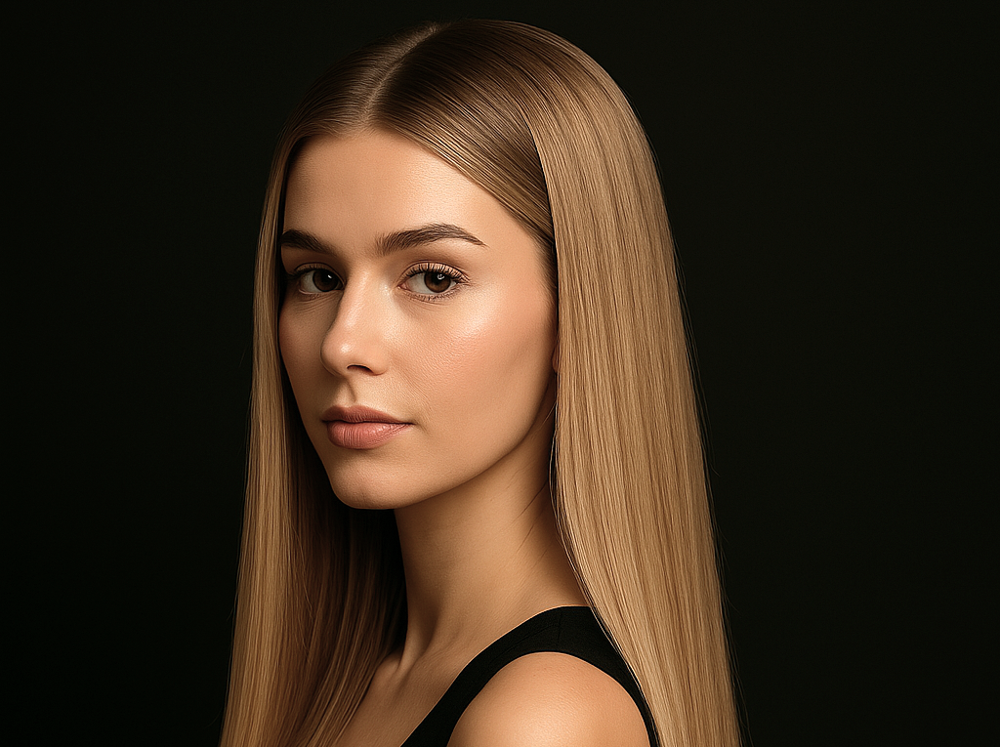

Как ухаживать за нарощенными волосами? Советы мастера наращивания волос в Ростове-на-Дону: правильное мытьё, расчёсывание, укладка и коррекция.

Узнайте все плюсы и минусы метода и как сохранить результат до 4 месяцев. Внутри специальное предложение для новых клиентов в Ростове-на-Дону!

Секрет идеальных волос после наращивания: 6 фатальных ошибок, которые совершают 9 из 10 девушек!
Качественное наращивание держится 3-4 месяца при условии профессионального выполнения и правильного ухода. Рекомендуем коррекцию каждые 6-8 недель для поддержания идеального вида.
Оптимальная длина зависит от вашего образа жизни и типа волос:
Я, как мастер по наращиванию волос с опытом, помогу подобрать идеальную длину с учетом ваших пожеланий.
Да, это обязательно! Основные правила:
При правильном уходе капсулы сохранят надежность крепления на весь срок носки.
Да, но только безаммиачные составы. Наносите от середины длины, избегая зоны крепления капсул.
Оптимально 3-4 месяца с коррекцией каждые 6-8 недель. Затем нужен перерыв 1-2 месяца.
При длине от 5 см я подберу специальные техники крепления, делающие переход незаметным.
Да, но ограничьте время до 15 минут и обязательно используйте термозащитный спрей.
Не рекомендую: Тугие высокие хвосты, Африканские косички, Химическую завивку
Используйте термозащиту (до 160°C), избегайте тугих причесок. Оптимально: мягкие волны (плойкой), низкие пучки, гладкие пряди (керамическим утюжком). Не применяйте металлические расчески и тяжелые стайлинги у корней.